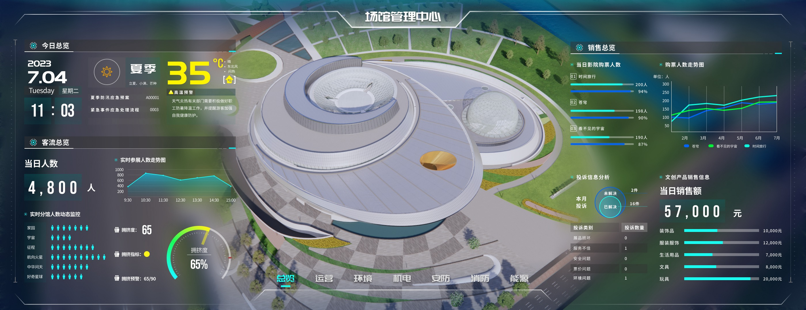
The Shanghai Astronomy Museum is one of China's largest and most-visited science museums, with multiple exhibition halls, theaters, and public facilities spread across a large campus.
The management team needed a centralized way to monitor visitor flow, building systems, security, and energy usage — all from a single large-format display in the control room.
The museum's operational data was spread across 7 separate systems. This project was about bringing it all into one spatially-anchored interface where problems could be spotted at a glance.
I designed the entire system end-to-end: the large-screen dashboard with 7 functional modules, plus a companion mobile app for alert response and on-the-go data access.
场馆的运营数据分散在 7 个不同的系统中。这个项目的核心是把它们整合进一个以空间为锚点的统一界面，让管理者快速定位问题。
为上海天文馆（上海科技馆分馆）设计的一套大屏数据可视化平台，部署在场馆管理控制中心。系统分为 7 个模块——总览、运营、环境、机电、安防、消防、能源——覆盖了大型场馆日常运营需要关注的主要数据。
场馆有 B1、F1、F2 三个楼层，平面地图无法同时表达楼层关系和空间位置。3D 模型配合楼层切换控件，让每个数据点对应到建筑中的实际位置。
The museum spans three floors (B1, F1, F2), with cameras, fire sensors, and HVAC units distributed across all of them. A flat map can't express floor relationships and spatial positions simultaneously. The 3D model, paired with a floor-switching control, ties each data point to its physical location—making it immediately clear where an issue is.
趋势用折线图，占比用环形图，状态用色标表格，空间分布标注在 3D 模型上——每个模块的数据性质差异很大，需要对应的可视化方式。
The 7 modules each deal with fundamentally different data: visitor trends, sensor readings, alarm events, equipment status, energy comparisons. Rather than applying one template, I matched each to its best-fit visualization—line charts for trends, ring charts for proportions, color-coded tables for status, annotated points on the 3D model for spatial distribution.
大屏观看距离远，关键数字需要大字号和高对比度确保第一时间被捕捉。明细信息用较小字号和低对比色退到第二层级。
The dashboard is viewed from several meters away—you can't read it like a webpage. Key metrics (4,800 daily visitors, 1.38M kWh monthly electricity) need oversized typography and high contrast. Secondary details like device logs and event tables recede with smaller type and muted colors. The dark background also required careful color calibration.
大屏视线先看中间再往两边扫。中间始终是空间概览，两侧始终是数据面板，切换模块时不需要重新适应。
On a large screen, the eye naturally goes to the center first, then out to the sides. Center is always the spatial view, sides are always data panels. Switching modules doesn't require relearning the layout. The two sides also naturally separate data dimensions—electricity vs. water for Energy, device stats vs. personnel events for Security.
运营、环境、安防等领域几乎没有交集，全部放在一个页面会远超可读极限。拆成 7 个模块后，每个只聚焦一个维度，总览页作为汇总入口。
Operations, environment, security, mechanical, fire, energy—these are fundamentally different domains with little overlap. Combining them on one screen would exceed readable limits. Seven modules, each focused on one dimension with a shared navigation bar, balance completeness against cognitive load. The Overview page serves as the consolidated entry point.
汇总客流、票务、销售、投诉等核心指标。左侧聚焦人流数据与分馆拥挤度，右侧覆盖票务和商业数据，顶部提供天气信息和应急预案入口。
The landing page aggregates the most critical KPIs: real-time and monthly visitor trends, sub-venue crowding with a congestion index, ticket sales, complaint tracking, and merchandise revenue. Weather and emergency protocol links at the top round out the full-picture view.
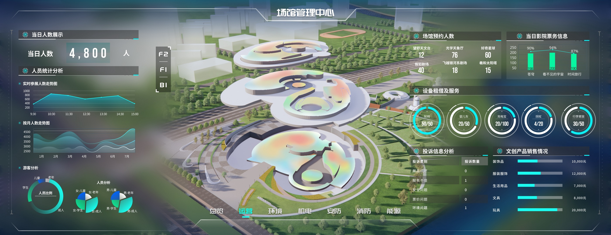
数据类型最丰富的模块，包含实时客流、游客画像、设备租借、投诉分析和文创销售。3D 模型上叠加了热力图，展示各展区的人流密度分布。
The most data-rich module: real-time visitor flow, demographic breakdowns, reservations, equipment rentals, complaint analysis, and merchandise sales. A heat map overlaid on the 3D model shows crowd density across exhibition zones.
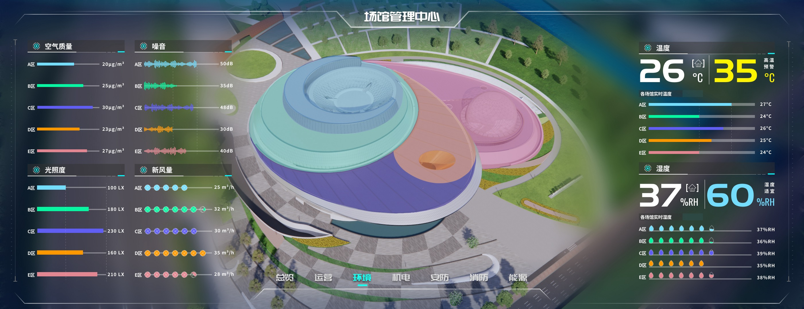
展示各分区的空气质量、噪音、光照、新风量和温湿度。3D 模型用色块标识不同区域，右侧用大字号突出当前温湿度与预警阈值。
Air quality, noise, illumination, fresh air volume, temperature, and humidity—broken down by zone. Color-coded areas on the 3D model provide spatial orientation; oversized typography on the right highlights current readings and alert thresholds.
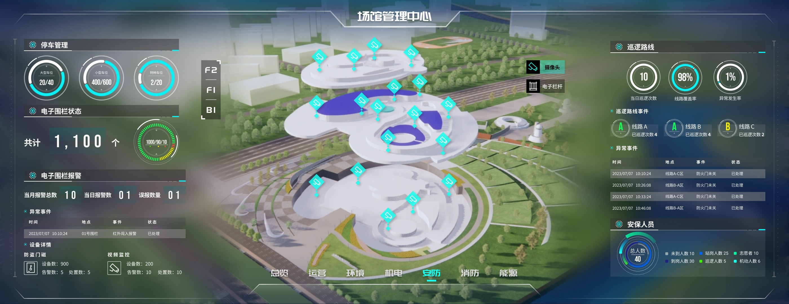
左侧展示停车管理与电子围栏状态，中间 3D 模型标注摄像头和栏杆的空间分布，右侧是巡逻路线、异常事件和安保人员分配。
Left panel: parking and electronic fence status. Center: camera and barrier gate locations on the 3D model. Right panel: patrol routes, anomaly events, and security staff allocation—structured as three progressive layers from devices to space to personnel.
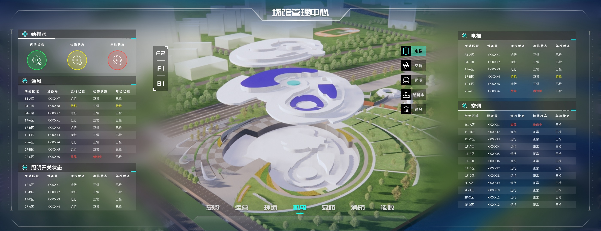
给排水、通风、照明、电梯、空调五大系统，按楼层列出设备的运行、检修和年检状态，异常项以红色高亮标记。
Five building systems—water supply, ventilation, lighting, elevators, HVAC—listed by floor with operating, maintenance, and inspection status. Anomalies are highlighted in red for immediate identification.
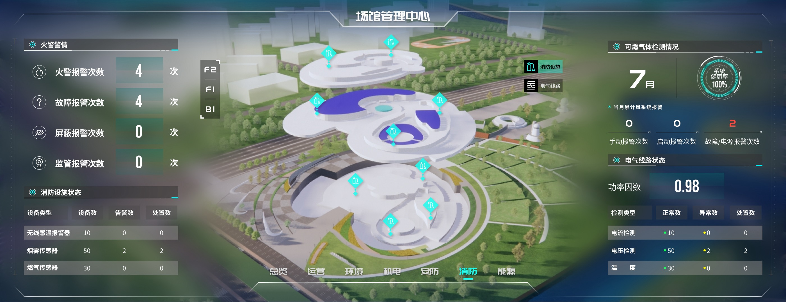
左侧展示火警警情统计与消防设施状态，右侧覆盖可燃气体检测和电气线路健康度。系统健康率以仪表盘形式突出显示。
Left: fire alarm statistics and facility status. Right: combustible gas detection, ventilation alerts, and electrical circuit health. A gauge prominently displays the overall system health rate.
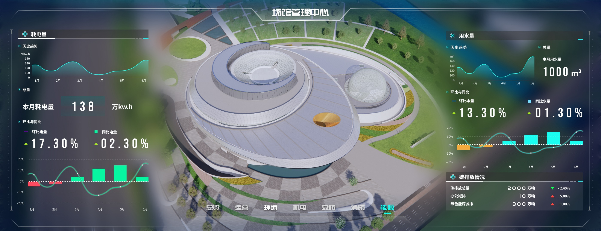
左右对称展示耗电量和用水量的历史趋势、当月总量与环比同比数据，底部的碳排放模块关联了减排指标。
Symmetrical layout with electricity on the left and water on the right, each showing trend charts, monthly totals, and MoM/YoY comparisons. A carbon emissions section at the bottom connects energy data to sustainability metrics.
Beyond the large-screen dashboard, I also designed a companion mobile app. The dashboard handles global display and real-time monitoring; the mobile app handles alert delivery and on-site response. Together, they form a complete monitoring-to-action loop.
除了大屏端，我还设计了配套的移动端应用。大屏负责全局展示和实时监控，移动端则承担异常推送和现场处置的角色，两者共同构成一个完整的监控响应闭环。
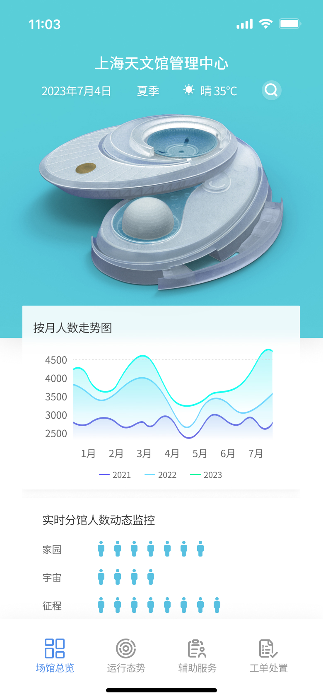
移动端首页 - 保留总览入口与核心趋势数据
Mobile home screen - overview entry with key trend data
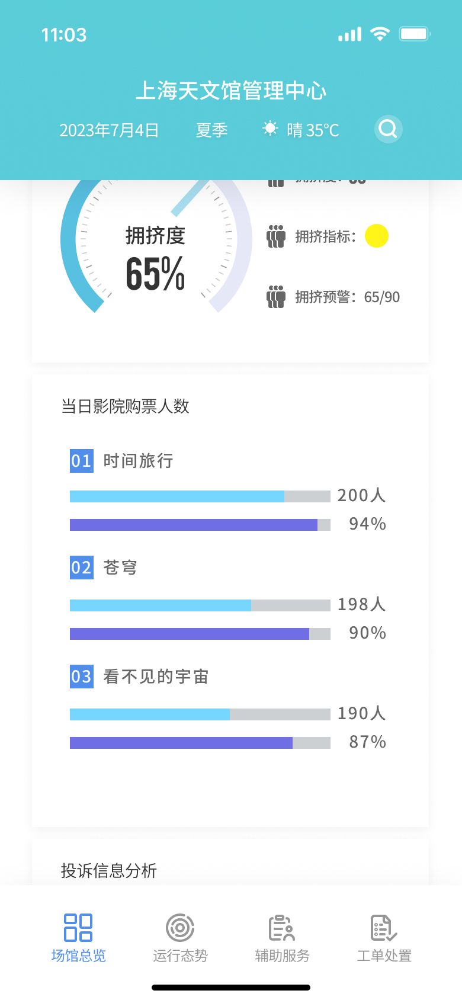
数据查看页 - 票务与拥挤度等指标适配为纵向浏览
Detail view - ticketing and congestion metrics reorganized for vertical browsing
移动端同样保留了场馆总览功能：月度客流趋势、分馆拥挤度、影院票务、投诉分析等核心数据可以在手机上随时查看。信息结构针对小屏幕做了重新组织，从大屏的左右对称布局调整为纵向卡片式排列。
The mobile app retains key overview data: monthly visitor trends, sub-venue crowding levels, theater ticket sales, and complaint analysis—all accessible on the go. The information architecture was reorganized for the small screen, shifting from the dashboard's symmetrical side-by-side layout to a vertical card-based flow.
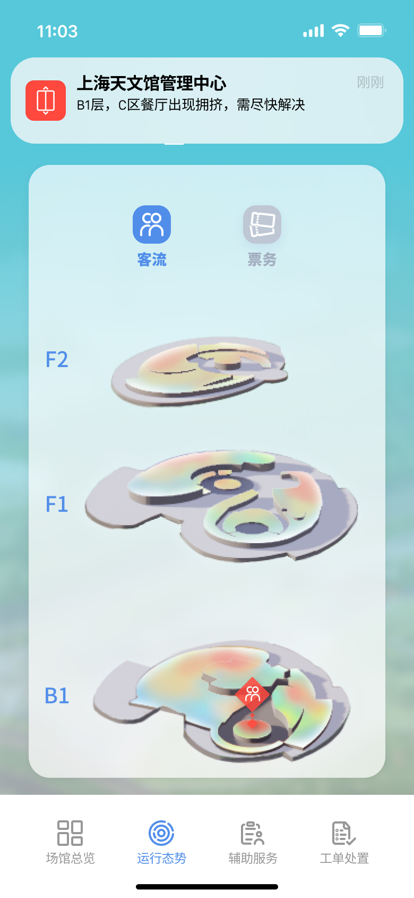
异常提醒 - 收到告警后可直接查看楼层位置与事件分布
Alert overview - inspect floor locations and incident distribution right after a notification
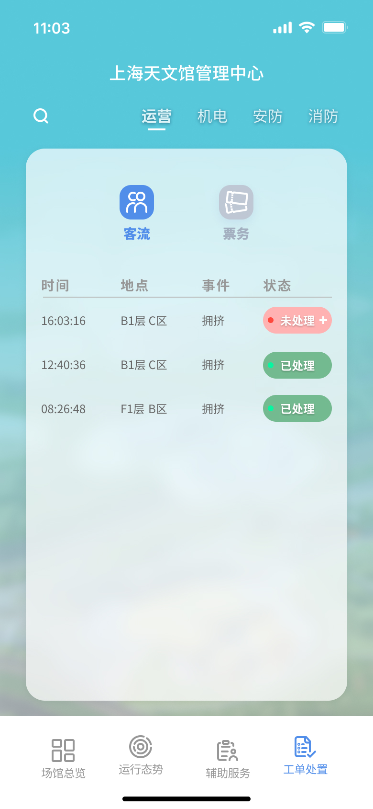
工单处理 - 在移动端继续完成异常流转与状态更新
Work order handling - continue incident processing and status updates on mobile
当系统检测到异常（如某区域拥挤超过阈值），移动端会收到实时推送通知。管理人员点击通知后可以看到：异常发生的具体位置（在 3D 模型上标红）、事件详情列表（时间、地点、事件、处理状态），以及系统生成的处理方案建议。确认处理后，状态会同步更新到大屏端。
When the system detects an anomaly (e.g., crowding exceeds a threshold), the mobile app delivers a real-time push notification. Tapping the alert shows: the exact location highlighted in red on the 3D model, an event log with timestamps and status, and a system-generated response recommendation. Once the operator confirms resolution, the status syncs back to the main dashboard.